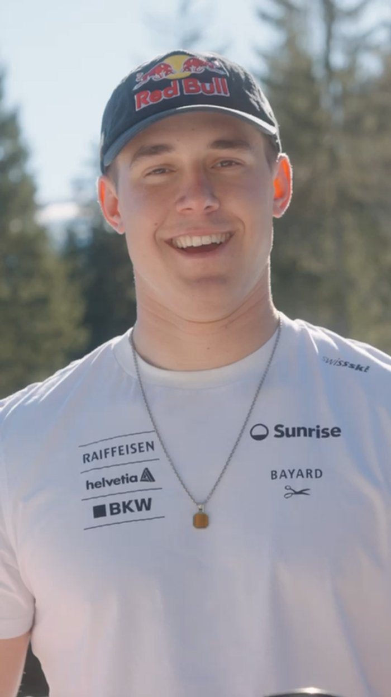
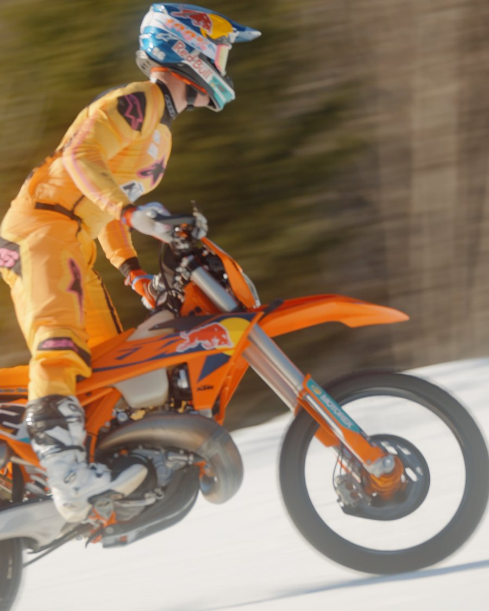
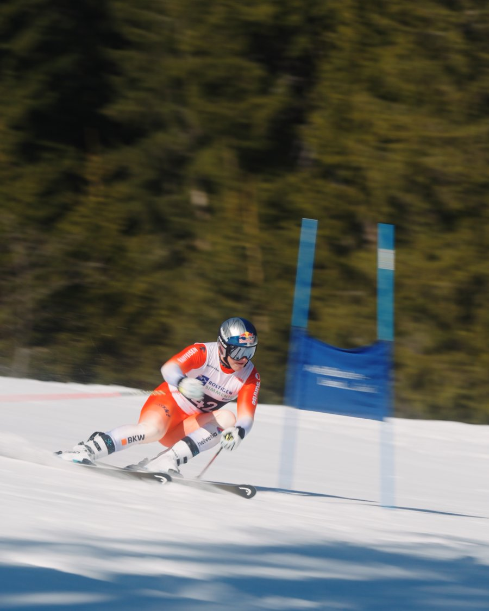
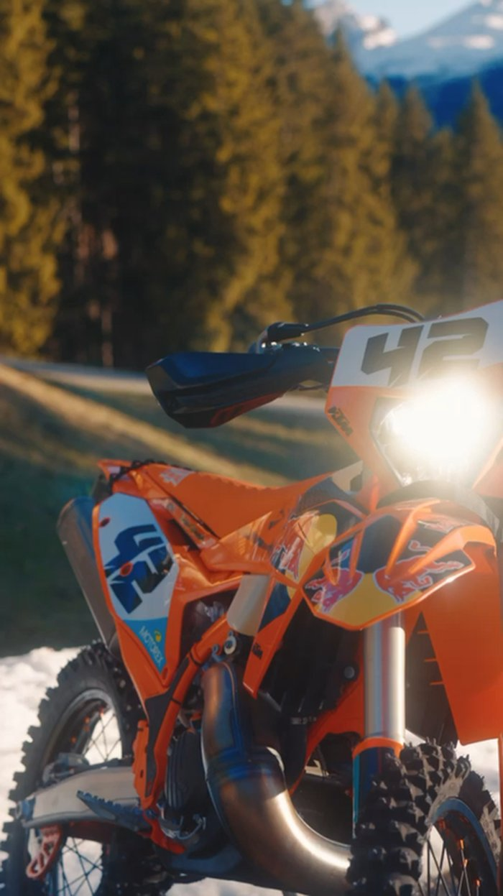
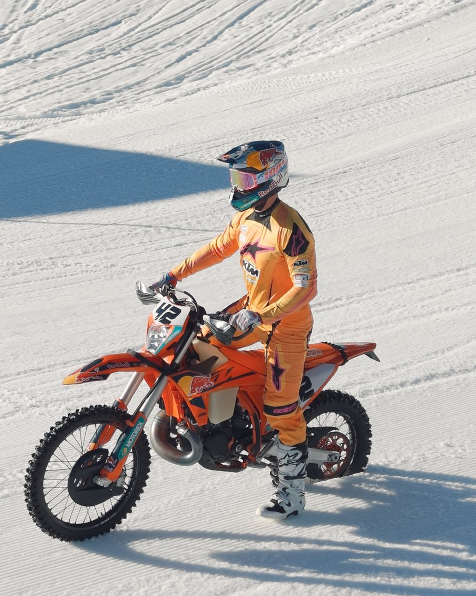
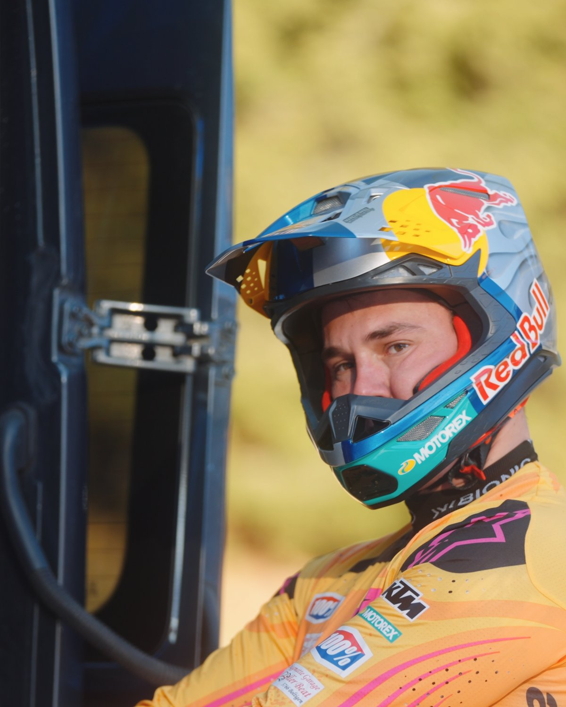
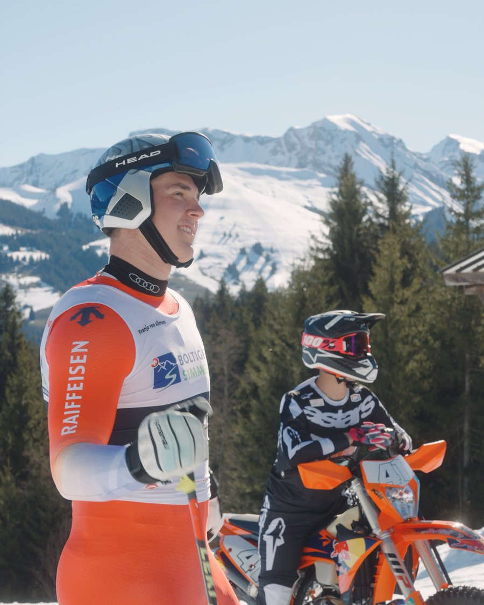
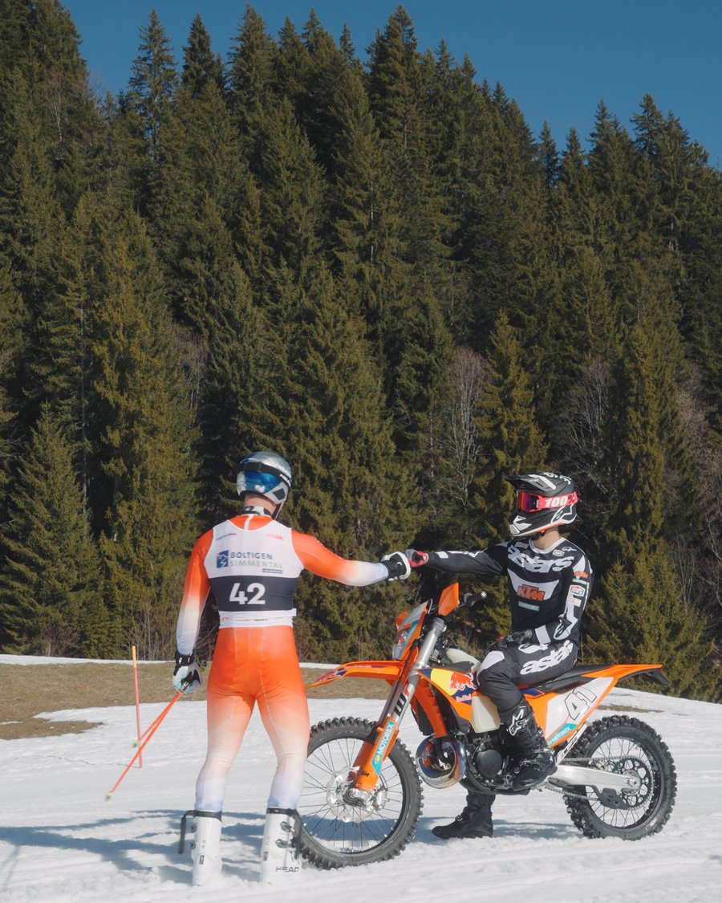
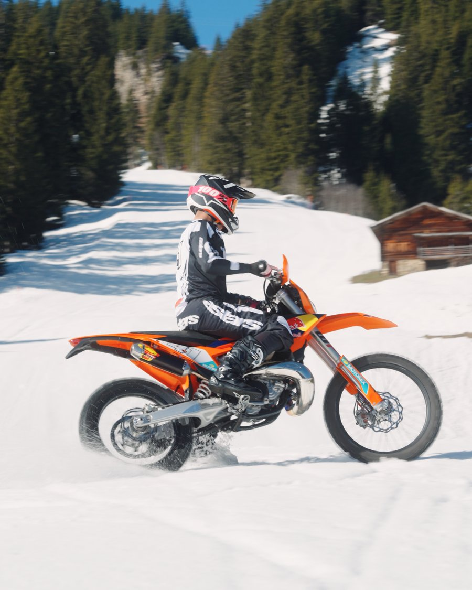
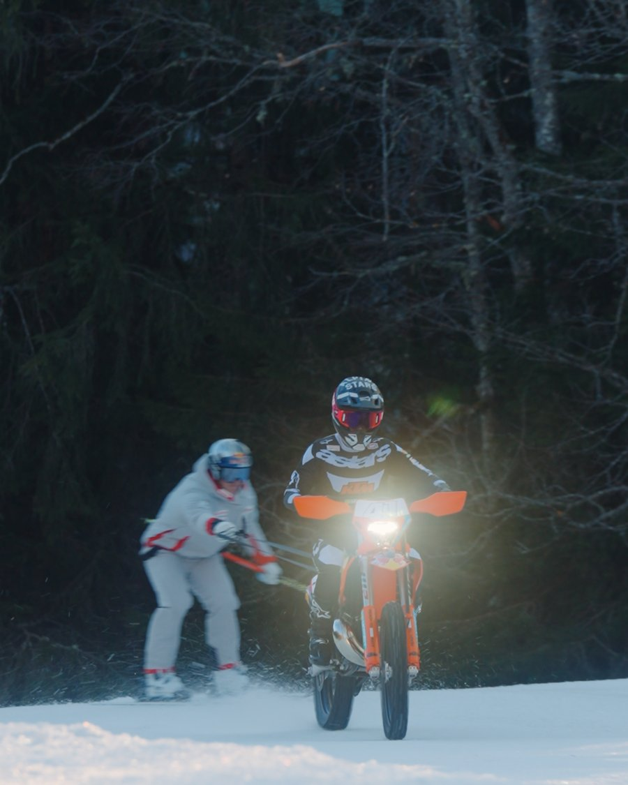

Zurück zu allen Projekten
Video · Sport
Wenn der Skistar auf zwei Räder wechselt.
Skipiste, Spike-Reifen und ein Kindheitsfreund: ein Tag mit Franjo von Allmen und seiner KTM an der Lenk.











Was wir geliefert haben
Behind-the-Scenes-Video
Action-Reel für Social Media
Foto-Dokumentation vom Tag an der Lenk
Bildauswahl & Farbkorrektur